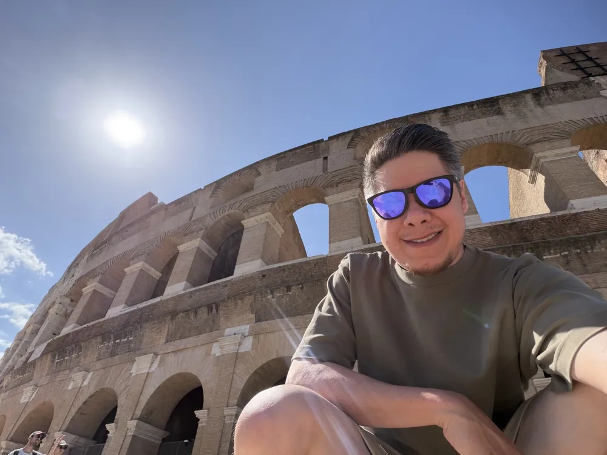
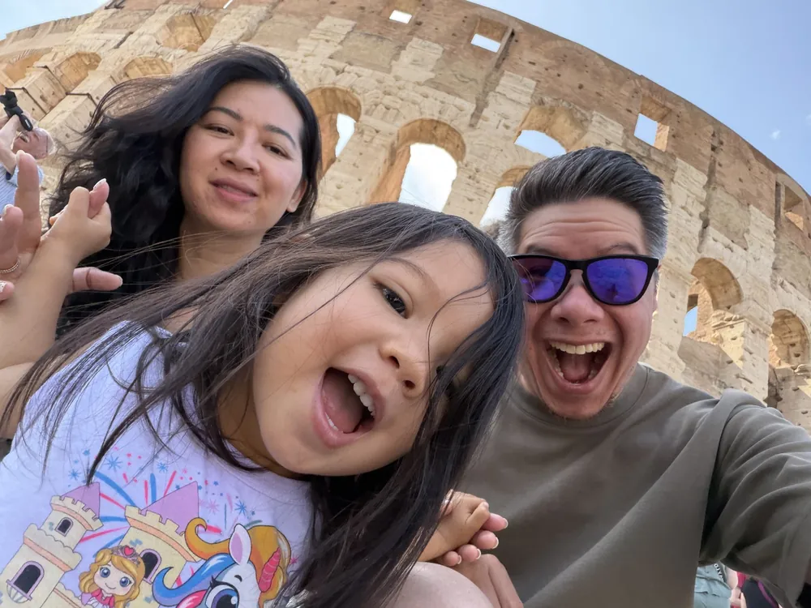
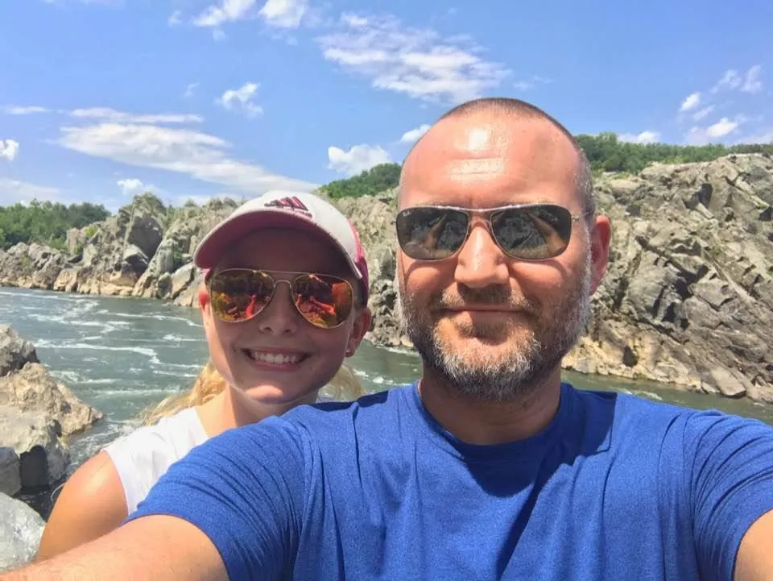

Empowering
growth through
 user‑centric
design.
user‑centric
design.
I'm a designer crafting refined experiences, using customer insights to connect businesses with their goals.
Scroll- PODS
- Cirkul
- SKILLZ
- MrBeast × Cirkul
- Design Systems
- E‑commerce
- WCAG Accessibility
$90M+
Revenue influenced through Cirkul's homepage & shopping experience
37M+
Sessions designed for across e‑commerce journeys
2M+
Products sold through optimized flows
+11%
First‑click success after a navigation redesign
(01) Selected work
Work that ships, and moves the numbers.
A curated selection of projects that reflect my commitment to simplicity and purposeful design.
-
01Shipped2026
Pre‑Quote Strategy
A decision framework built from data and user insights, giving teams a shared way to decide what goes in front of customers before they ever get a quote.
- Strategy
- Research
- Data

-
02Shipped2025
PODS Design System
From a loose pattern library to a governed product language: reusable components, layout guidance and interaction patterns that cut implementation ambiguity across teams.
- Design systems
- Governance
- Components

-
03Shipped2024
Cirkul Homepage
A homepage and shopping redesign that contributed to $90M+ in revenue and 2M+ products sold across 37M+ sessions.
$90M revenue

-
04Shipped2025
Nav Redesign
Information architecture and navigation rebuilt around how people actually look for things, validated with first‑click testing.
+11% first‑click success

(02) About me
About Andrew
I'm a designer focused on creating simple, purposeful, and elegant solutions. Beyond design I'm a dad, husband, son, adventurer, gamer, and collector of experiences.

From road trips across America's National Parks, trekking through Iceland, backpacking through Norway, or eating my way through Japan 🍣 — I bring a world of experiences to the table.
“Leadership is not about being in charge. Leadership is about taking care of those in your charge.”
— Simon Sinek



My principles
-
Clarity
Whether visual UI elements or CTA labels, purpose and clarity are the goal.
-
Simplicity
Don't overcomplicate things. Find what works and keep the noise low.
-
Human
People use it, so it should be designed to be used from start to end.
-
Informed
Decisions validated or invalidated by data, not opinions.
(03) Process
Simple, purposeful, adaptable.
-
01
Discover
I begin by listening, gaining a deep understanding of your goals, audience, and challenges through research and conversation.
-
02
Define
I distill insights into a clear direction. Strategy, structure, and creative foundations are set to guide the work forward.
-
03
Design
Ideas take shape through thoughtful design. I explore, refine, and iterate with intention, always rooted in purpose and simplicity.
-
04
Deliver
I finalize and hand off with care. Every element is ready for implementation with clarity, consistency, and attention to detail.
-

Great design is a result of clarity, collaboration, and craft.
(04) Experience
Leaving an impact.
I've had the delight of working with, leading, and mentoring some amazing people while improving the metrics that matter.
-
PODSSenior UX Designer2025 – 2026
Defined reusable components, layout guidance, and interaction patterns for the PODS design system, improving consistency across design teams.
-
CirkulLead UX Designer2023 – 2025
Contributed to $90M+ in revenue and 2M+ products sold through optimized homepage and e‑commerce experiences across 37M+ sessions.
-
SKILLZUX Designer2018 – 2023
Redesigned core information architecture, user flows, and product experiences, simplifying complex surfaces and improving usability.
-
FreelanceProduct Designer2018 – Present
Partnering with product and business teams on feature prioritization, UX strategy, and customer journey improvements across verticals.
(05) Testimonials
Kind words from great people.
Andrew's one of those rare designers who gets both UX flow and UI detail: meticulous, strategic, and never superficial. He asks sharp questions, works clean, and delivers work that lasts. The email system he built continues to drive results. I would work with him again in a heartbeat.
Andrew has been a massive contribution to the team. He's done a phenomenal job coming in, providing design structure. The design team, and I mean this deeply, would not be where it is today without all of his hard effort and work and structure.
He is a true leader and talks to anyone, whether an intern or the CBO, with respect and kindness. At Cirkul, his influence was everywhere, from email templatization to website interface, and even WCAG standards for digital accessibility.
Andrew is incredibly knowledgeable and approaches each project with a thorough understanding of the audience, the goals, and the desired outcomes, always backed by research and a clear point of view.
Andrew's well‑organized and methodical approach ensured all design projects were completed to a high standard, and his attention to detail was exemplary. He would be a great asset to any design team.
Not only is he talented, but his expertise in UX and his professional, leader approach to different challenges has left a mark here and on everyone who had the pleasure to work with him.